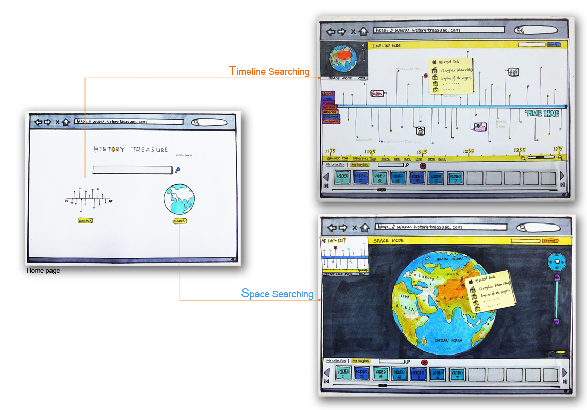
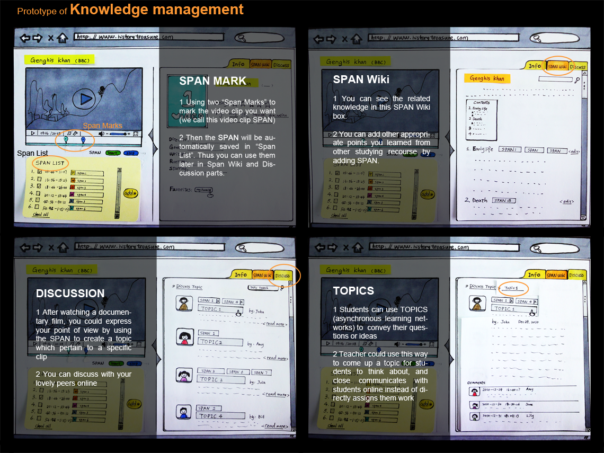
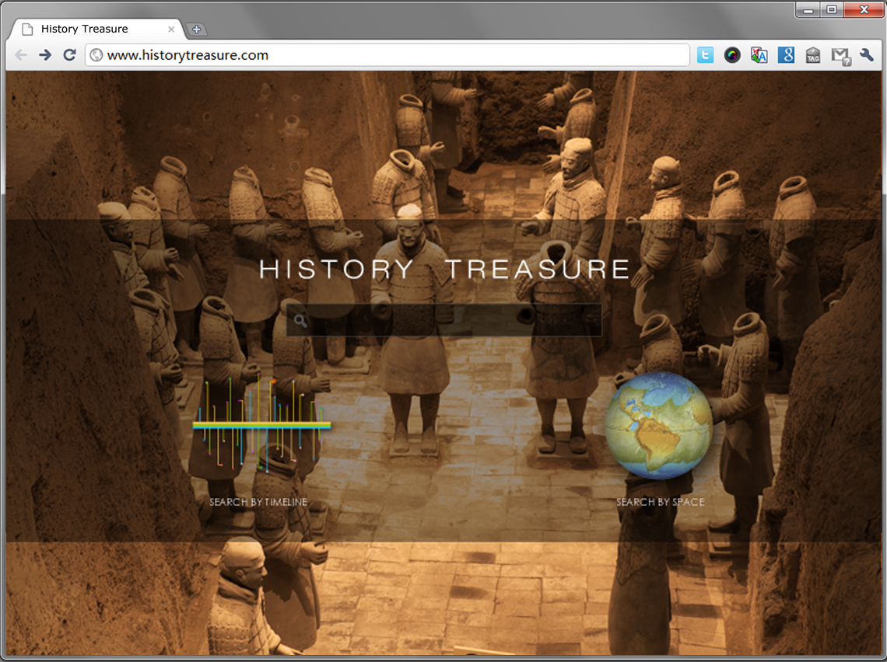
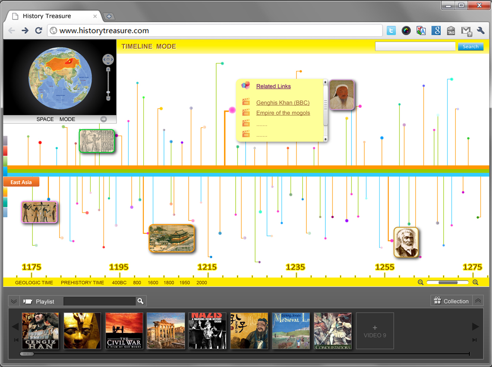
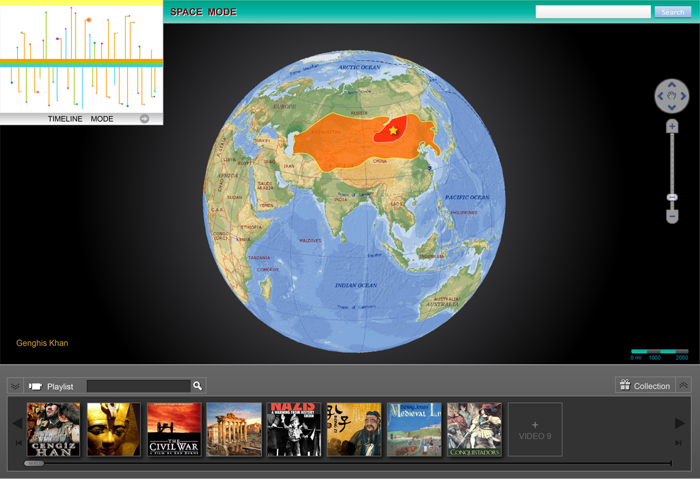
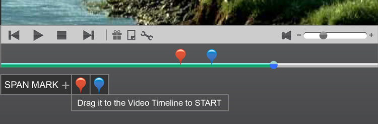
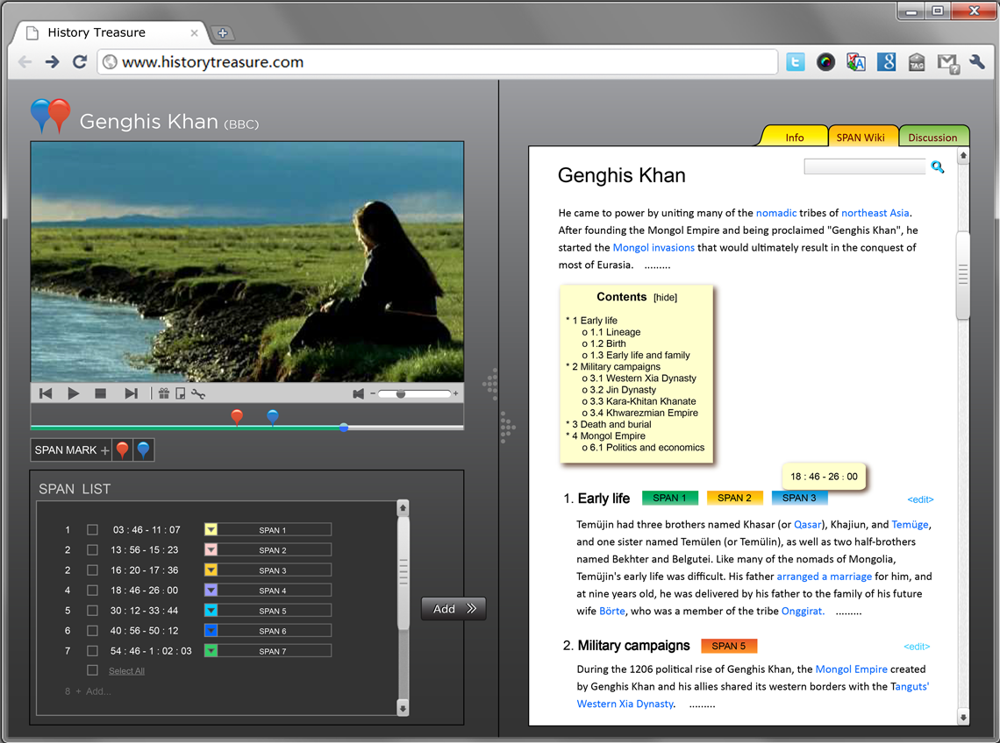
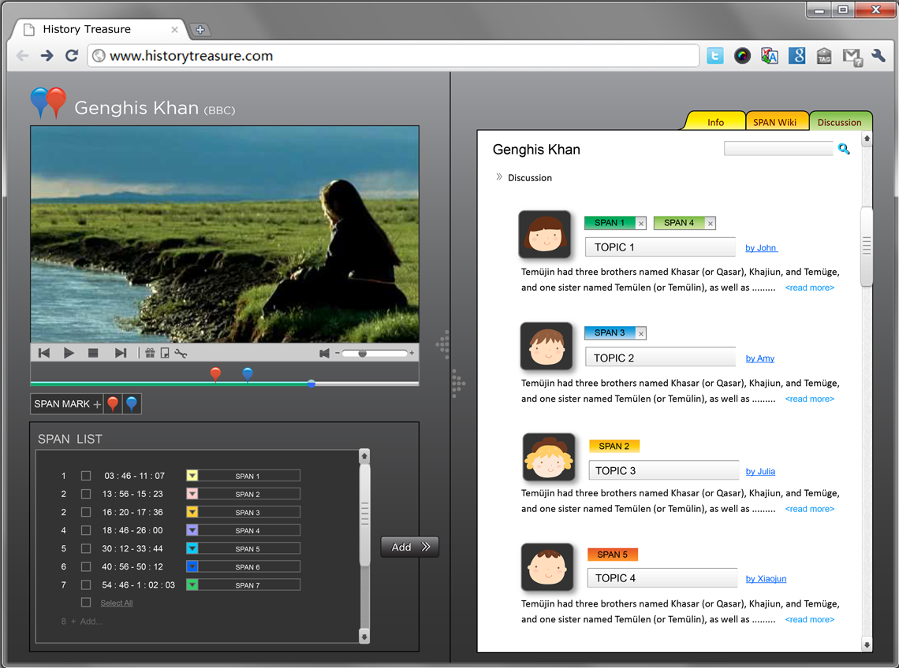
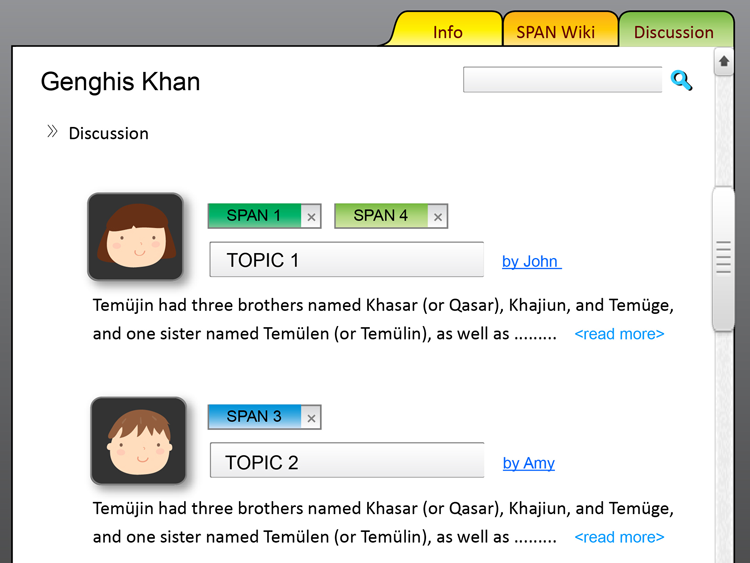

History Treasure
Product Design, Research, Web
Leaning History has great value to the life of every individual, but nearly two thirds of Chinese students do not like history class or history study. They think history learning means doing huge work in remembering the facts from test book by rote, and rote kills most of students’ interests and their objective views of the history.
The History Treasure is a project to investigate a new form of online collaborative learning pattern: young people can find a new way to learn history by watching history documentary: they are able to find related materials by a vivid visual search tool, replenish stuff using a special Wiki, express their own opinion, and ask a question or discuss their favorite topics with using “Span tag”. We think learning through fun will develop young people’s natural curiosity.
User analysis, Synthesis, Personas & Scenario, Storyboarding, Paper Prototype
User analysis
50 Students coming from middle schools in Hanghzou completed the questionnaires about their history learning experience. They were also interviewed giving us a lot useful feedback.
From Questionnaire, students preferred arts, music and PE class to science subjects. However, according the interview the truth was that they thought there was much study pressure on science courses, and the teaching method for arts, music and PE was much better than science courses.
Most students like playing Computer game, watching Movie and surfing the internet as their entertainment. Through talking with them, we found two main points of attracting the youth, which are vivid visual elementsand audio expressions.
Insight
The teenagers are not really hate the history itself but they don’t like the way to study history. And they find history told in class is like the dogma, however in fact they want to find true by themselves.
A new learning pattern which is able to ignite teen’s interest in history and encourage them to explore the knowledge not only by independent thinking but also through cooperation with their peers.
Personas & Scenarios
Storyboards
Solution idea in a nutshell:
- Interactive Knowledge management
- Visual video search (information visualization)
- Collaborative video learning (CSCW)
Paper Prototype
Prototype for Visual Searching
Prototype of Collaborative video learning
Test & Research
To begin answering some of the questions generated by the Scenario and to test our new learning system, a paper prototype was created. The prototype supports users in engaging with the device, while helping the team to capture users’ needs and make improvement for the using experience of History Treasure.
The Final Version
Homepage: 2 modes
Timeline Mode
Searching the video in Timeline Mode or Space Mode, or switching mode later as you like. Taking Genghis khan as an example—- Timeline Mode: not only can you find the aimed film about Genghis, but also you can know other historical events at same time
Space Mode
In Space Mode: you can find what happened in other parts/ other country at the same time as Genghis Khan’s. Thus, probably you could find the answer to why he conquered such wide areas in 13 century
SPAN MARK
SPAN MARK 1
Use two “Span Marks” to mark the video clip you want (we call this video clip SPAN)
SPAN MARK 2

Then the SPAN will be automatically saved in “Span List”. Thus you can use them later in Span Wiki and Discussion parts.
SPAN Wiki
- You can see the related knowledge in this SPAN Wiki box.
- You can add other appropriate points you learned from other studying recourse by adding SPAN.
DISCUSSION
- After watching a documentary film, you could express your point of view using the SPAN to create a topic which pertain to a specific clip
- You can discuss with your lovely peers online
Topic
Students can use TOPICS (asynchronous learning networks) to convey their questions or ideas; Teacher could use this way to come up with a topic for students to think of, and closely communicates with students online instead of directly assigning them work